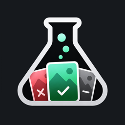
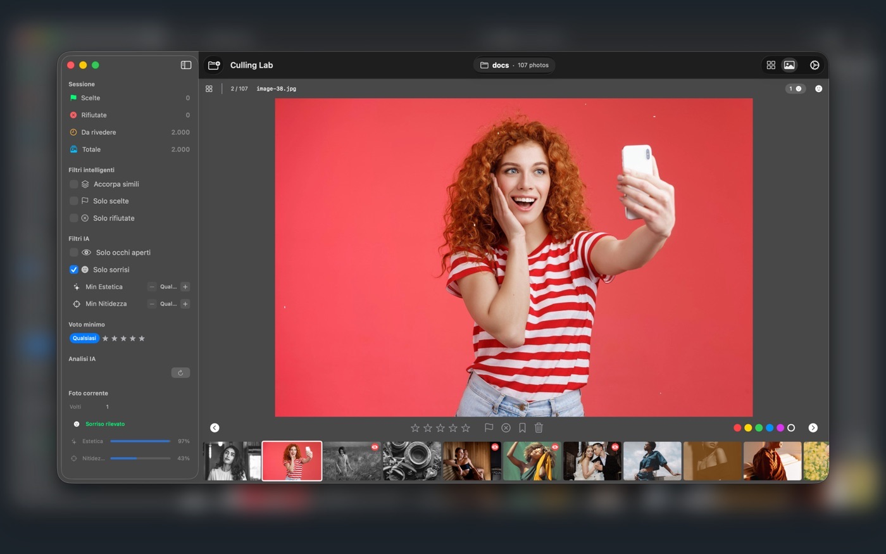
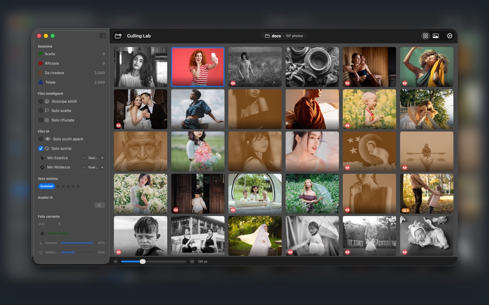
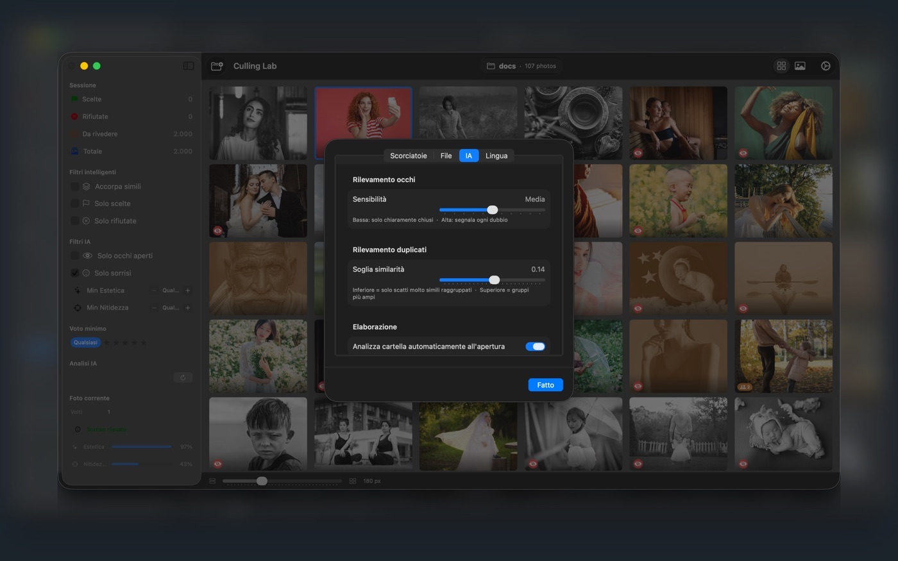

01
Navigazione veloce
Scorri le foto senza attese, anche nei servizi più grandi.

L'AI ti aiuta a lavorare più in fretta su grandi quantità di scatti, ma la scelta finale resta sempre tua.
{
"versione": "1.4",
"piattaforma": "Mac",
"richiede": "macOS 15.6",
"categoria": "Foto e video",
"prezzo": "Gratis",
"prima uscita": "22 maggio 2026",
"aggiornata": "27 luglio 2026"
}


01
Scorri le foto senza attese, anche nei servizi più grandi.
02
Un supporto durante la selezione, che non sceglie al posto tuo.
03
Raggruppa in automatico le foto simili per confrontarle meglio.
04
Trova rapidamente le foto mosse o meno riuscite.
05
Le foto vengono elaborate sul Mac, per più privacy e velocità.
06
Un'interfaccia minimale, pensata per grandi servizi fotografici.